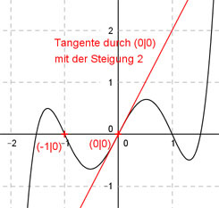

Aufgabe 114 Der Graph einer zu (0|0) punktsymmetrischen ganzrationalen Funktion 5. Grades hat im Nullpunkt die Steigung 2 und in (-1|0) einen Wendepunkt. Wie lautet seine Funktionsgleichung?  Allgemeine Form einer zu (0|0) punktsymmetrischen ganzrationalen Funktion 5. Grades: f(x) = ax5 + cx3 + ex f(x) = 5ax4 + 3cx4 + e f’’(x) = 20ax3 + 6cx 4 Bedingungen : (eine mehr als nötig) 1. Hat im Nullpunkt die Steigung 2 bedeutet zum einen: f(0) = 0 --> a * 05 + c * 03 + e * 0 = 0 --> 0 = 0 liefert kein Ergebnis 2. Hat im Nullpunkt die Steigung 2 bedeutet zum anderen: f’(0) = 2 --> 5a * 04 + 3c * 02 + e = 2 --> e = 2 3. Hat in (-1|0) einen Wendepunkt bedeutet zum einen: (e = 2 eingesetzt) f(-1) = 0 --> a * (-1)5 + c * (-1)3 + 2 * (-1) = 0 --> -a - c - 2 = 0 |+2 -a - c = 2 I 4. Hat in (-1|0) einen Wendepunkt bedeutet zum anderen: f’’(-1) = 0 --> 20a * (-1)3 + 6c * (-1) = 0 --> -20a - 6c = 0 II I * (-6) + II 6a + 6c = -12 -20a - 6c = 0 ---------------- -14a = -12 |:(-14) a = 6/7 a = 6/7 in I eingesetzt. - 6/7 - c = 2 - 6/7 - c = 14/7 | +6/7 -c = 20/7 |:(-1) c = -20/7 Gesuchte Funktionsgleichung: f(x) = (6/7)x5 - (20/7)x3 + 2x